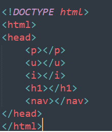

Wprowadzenie
HTML (Hypertext Markup Language) jest językiem znaczników, który jest używany do tworzenia stron internetowych. HTML pozwala na określanie struktury i zawartości strony internetowej za pomocą specjalnych znaczników. Przykład:
Znaczniki
Znaczniki HTML składają się z nazwy znacznika umieszczonej w nawiasach kątowych, np. <"nazwa znacznika">. Znaczniki mogą być zagnieżdżone wewnątrz siebie, co pozwala na określanie struktury strony. Przykład:
Atrybuty
Atrybuty pozwalają na dodanie dodatkowych informacji do znaczników. Są one umieszczane w nawiasach po nazwie znacznika i składają się z nazwy atrybutu oraz jego wartości. Przykład:
Nagłówki i akapity
Nagłówki i akapity to podstawowe elementy do tworzenia zawartości strony. Nagłówki są oznaczone przez znaczniki <"h1"> do <"h6">, z czego <"h1"> oznacza najważniejszy nagłówek, a <"h6"> najmniej ważny. Akapity są oznaczane przez znacznik <"p">. Przykład:
Listy
Listy pozwalają na tworzenie uporządkowanej i nieuporządkowanej zawartości. Listy uporządkowane są oznaczone przez znacznik <"ol">, a nieuporządkowane przez znacznik <"ul">. Elementy listy są oznaczane przez znacznik <"li">. Przykład:
Linki i obrazy
Linki pozwalają na nawigację po stronie lub przekierowanie do innej strony. Są one oznaczane przez znacznik z atrybutem "href" określającym adres linku. Obrazy są oznaczane przez znacznik <"img"> z atrybutem "src" określającym adres obrazu oraz atrybutem "alt" określającym alternatywny tekst dla obrazu. Przykład: